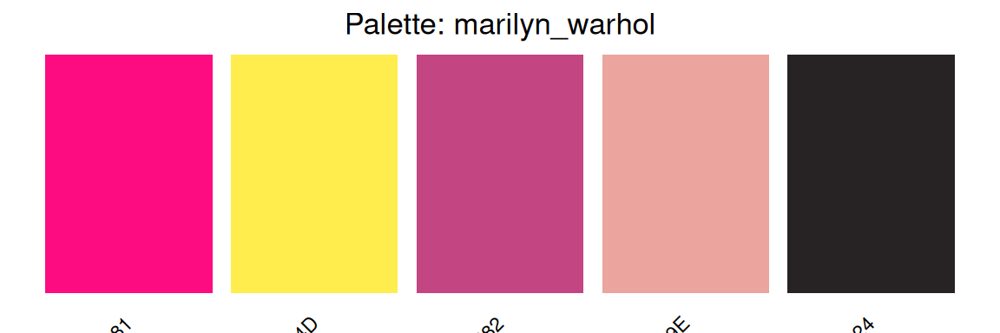
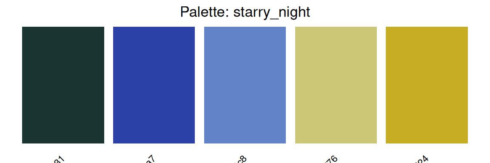
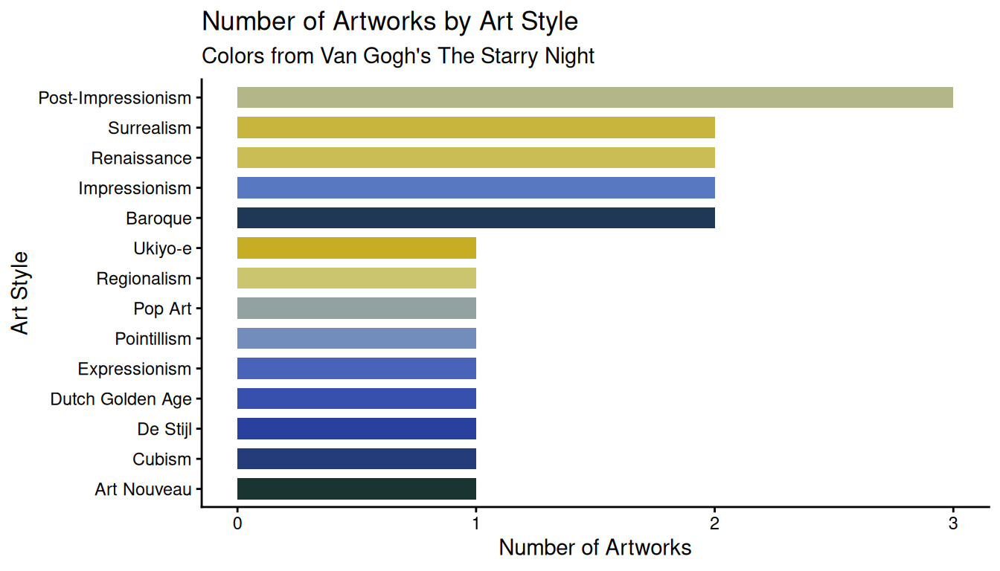
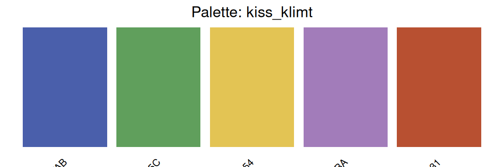
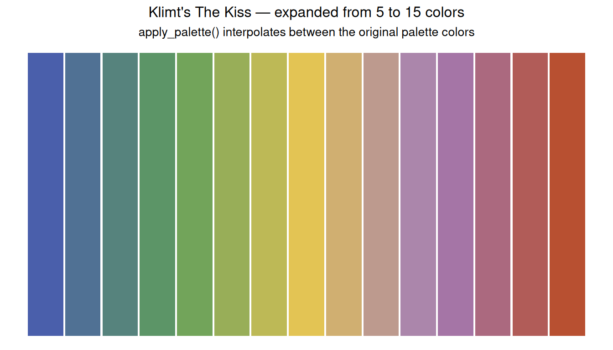

# Option 1: using devtools
# install.packages("devtools")
devtools::install_github("ADC-405-S26/aRtpalette")
# Option 2: using pak
# install.packages("pak")
pak::pak("ADC-405-S26/aRtpalette")🎨 aRtpalette Package
Overview
aRtpalette is an R package that brings art-inspired color palettes into data visualizations. The package lets you store palettes as structured objects, preview them as color swatches, and expand them when a chart needs more colors than the source artwork provides.
The inspiration came from the frustration of manually copying hex codes from paintings into ggplot2 charts with no clean workflow. I wanted a tool that treated color as data — something you could store, validate, visualize, and manipulate programmatically.
Installation
Load the package using the following code.
library(aRtpalette)
library(ggplot2)Motivation
As a person who loves and is interested in art, I often find myself struggling to bring the colors of artwork paintings into my data visualizations in R. The process was frustrating, requiring manual look-up of hex codes, copying them one by one, and then figuring out how to apply them to a ggplot2 chart. There was no clean way to store a palette as a table, visualize it before using it, or expand it when I needed more colors than the original artwork provided.
The frustration motivated me to build aRtpalette. The goal for the package was to bring to the user a small toolkit that makes working with art-inspired Color palettes in R feel natural and streamlined. I wanted to be able to store colors as a structured object, plot them as swatches to preview what I was working with, and then expand a palette creatively, when a chart needed more colors than the original painting contained.
This vignette walks you through the three core functions of the package and shows how they work together in a realistic workflow using the built-in artwork_palettes dataset.
The built-in dataset: artwork_palettes
This is a built-in dataset with a table of 20 palettes extracted from iconic artworks across art history, sourced from Color Lisa. Each row is one artwork, and each palette contains five hex color codes alongside metadata like the artist name and art movement.
data(artwork_palettes)
head(artwork_palettes) palette_name artwork artist hex1 hex2
1 starry_night The Starry Night Van Gogh #1a3431 #2b41a7
2 bedroom_arles Bedroom in Arles Van Gogh #374D8D #93A0CB
3 self_portrait_hat Self-Portrait with a Straw Hat Van Gogh #FBDC30 #A7A651
4 great_wave The Great Wave off Kanagawa Hokusai #1F284C #2D4472
5 water_lilies Water Lilies (1906) Monet #9F4640 #4885A4
6 woman_parasol Woman with a Parasol Monet #82A4BC #4C7899
hex3 hex4 hex5 style
1 #6283c8 #ccc776 #c7ad24 Post-Impressionism
2 #82A866 #C4B743 #A35029 Post-Impressionism
3 #E0BA7A #9BA7B0 #5A5F80 Post-Impressionism
4 #6E6352 #D9CCAC #ECE2C6 Ukiyo-e
5 #395A92 #7EA860 #B985BA Impressionism
6 #2F5136 #B1B94C #E5DCBE ImpressionismThis is the kind of structured color table I always wanted to have available in R. You can filter it by style, browse by artist, or pull any row and immediately start working with the colors.
# How many art styles are represented?
table(artwork_palettes$style)
Art Nouveau Baroque Cubism De Stijl
1 2 1 1
Dutch Golden Age Expressionism Impressionism Pointillism
1 1 2 1
Pop Art Post-Impressionism Regionalism Renaissance
1 3 1 2
Surrealism Ukiyo-e
2 1 Step 1: Creating a palette object with palette_from_hex()
The first function, palette_from_hex(), takes a vector of hex color codes and a name, and returns a validated palette object of class “artpalette”. The function checks that every hex code is properly formatted before proceeding, so you get a clear error message instead of a silent failure later in your workflow.
Let’s use Van Gogh’s Starry Night from the dataset and create a palette object from it.
row <- artwork_palettes[artwork_palettes$palette_name == "starry_night", ]
starry_night <- palette_from_hex(
hex_codes = c(row$hex1, row$hex2, row$hex3, row$hex4, row$hex5),
name = "starry_night"
)
starry_night$name
[1] "starry_night"
$colors
[1] "#1a3431" "#2b41a7" "#6283c8" "#ccc776" "#c7ad24"
attr(,"class")
[1] "artpalette"The result is a list with the class “artpalette” that stores the name and color codes. This object is what the other two functions expect as input. The output is the central unit of the package. The function will catch bad input immediately:
# This fails gracefully with a clear message
palette_from_hex(c("not_a_hex", "#FF5733"), name = "bad_palette")Error in `palette_from_hex()`:
! Invalid hex codes:not_a_hexStep 2: Visualizing a palette with plot_palette()
Before using a palette in a chart, it helps to see it. The second function, plot_palette(), takes an "artpalette" object and renders a clean color swatch grid showing each color block and its hex code. This is the store and preview step that I always wished existed.
plot_palette(starry_night)
You can immediately see the deep navy blues and warm gold tones that define the painting. This visual check before applying a palette to real data is one of the most useful parts of the workflow. The function removed the process of having to go back and forth, applying colors, not liking them, and having to start over. Let’s also preview a few more palettes from the dataset to compare styles:
# Monet's Water Lilies
row2 <- artwork_palettes[artwork_palettes$palette_name == "water_lilies", ]
water_lilies <- palette_from_hex(
c(row2$hex1, row2$hex2, row2$hex3, row2$hex4, row2$hex5),
name = "water_lilies"
)
plot_palette(water_lilies)
# Warhol's Marilyn Monroe
row3 <- artwork_palettes[artwork_palettes$palette_name == "marilyn_warhol", ]
marilyn <- palette_from_hex(
c(row3$hex1, row3$hex2, row3$hex3, row3$hex4, row3$hex5),
name = "marilyn_warhol"
)
plot_palette(marilyn)
Side by side, these three palettes already tell a story about how different art movements use color. Impressionism leans toward softness and naturalness, while Pop Art is bold and high-contrast.
Step 3: Expanding a palette with apply_palette()
The third function,apply_palette(), takes an "artpalette" object and a number n, and returns exactly n hex color codes ready to use in a ggplot2 chart. If you ask for more colors than the palette contains, the function interpolates between the existing colors using R’s built-in color ramp. So the user can take a 5-color painting palette and expand it to 10, 15, or 20 colors for a large categorical chart. This is what I mean by “expand on the original palette for creativity.” The source painting gives you the anchor colors, and the function handles the rest.
# Get exactly 3 colors from the Starry Night palette
three_colors <- apply_palette(starry_night, n = 3)
three_colors[1] "#1A3431" "#6283C8" "#C7AD24"# Expand to 10 colors — interpolating between the original 5
ten_colors <- apply_palette(starry_night, n = 10)
ten_colors [1] "#1A3431" "#213965" "#293F99" "#3D56B2" "#5574C0" "#7992B5" "#A8B091"
[8] "#CBC46C" "#C9B848" "#C7AD24"A complete workflow
Here is a full example using artwork_palettes and all three functions working together. We will count how many artworks belong to each art style in our dataset and visualize it using the Starry Night palette.
# Step 1: Pull the Starry Night palette from our dataset
row_sn <- artwork_palettes[artwork_palettes$palette_name == "starry_night", ]
pal_sn <- palette_from_hex( hex_codes = c(row_sn$hex1, row_sn$hex2, row_sn$hex3, row_sn$hex4, row_sn$hex5),
name = "starry_night"
)
# Step 2: Preview it before using it
plot_palette(pal_sn)
# Step 3: Count artworks per art style in artwork_palettes
style_counts <- as.data.frame(table(artwork_palettes$style))
colnames(style_counts) <- c("style", "count")
# Step 4: Expand the palette to match the number of style groups
chart_colors <- apply_palette(pal_sn, n = nrow(style_counts))
# Step 5: Build the chart using our own data
ggplot(style_counts, aes(x = reorder(style, count),
y = count,
fill = style)) +
geom_bar(stat = "identity", width = 0.7) +
scale_fill_manual(values = chart_colors) +
coord_flip() +
labs(
title = "Number of Artworks by Art Style",
subtitle = "Colors from Van Gogh's The Starry Night",
x = "Art Style",
y = "Number of Artworks"
) +
theme_classic() +
theme(legend.position = "none")
This chart was built entirely from artwork_palettes. The style groups came from the style column, the bar heights came from counting rows, and the colors came from expanding the Starry Night palette using apply_palette(). All three functions worked together in one clean pipeline.
Creative expansion: going beyond the original palette
The apply_palette() function becomes useful when we need more colors than the original painting provides. Here we take Klimt’s The Kiss, a 5-color palette, and we will use the function to expand it to 15 colors, showing how the function interpolates between the original colors while staying true to the painting’s spirit.
# Start with Klimt's The Kiss (5 colors)
row_k <- artwork_palettes[artwork_palettes$palette_name == "kiss_klimt", ]
pal_k <- palette_from_hex(
c(row_k$hex1, row_k$hex2, row_k$hex3, row_k$hex4, row_k$hex5),
name = "kiss_klimt"
)
plot_palette(pal_k)
# Expand to 15 interpolated colors
expanded <- apply_palette(pal_k, n = 15)
expanded_df <- data.frame(
x = seq_len(15),
color = expanded
)
ggplot(expanded_df, aes(x = x, y = 1, fill = color)) +
geom_tile(width = 0.95, height = 0.8) +
scale_fill_identity() +
labs(
title = "Klimt's The Kiss — expanded from 5 to 15 colors",
subtitle = "apply_palette() interpolates between the original palette colors"
) +
theme_void() +
theme(plot.title = element_text(hjust = 0.5, size = 12),
plot.subtitle = element_text(hjust = 0.5, size = 10))
This is what “expanding on the original palette for creativity” looks like in practice: the source painting gives you the anchor colors, and apply_palette() handles the rest.
Summary
The three functions in aRtpalette are designed to work as a pipeline:
palette_from_hex()— store hex codes from any artwork as a validated, named palette objectplot_palette()— preview the palette as color swatches before applying it to a chartapply_palette()— extract or expand the palette to exactly the number of colors your chart needs.
##Source code aRtpalette GitHub Repository